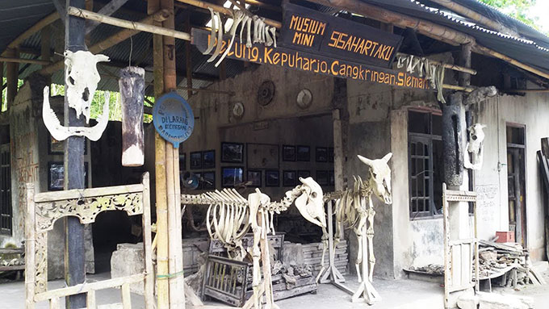

Jl. Raya Solo - Yogyakarta No.16, Kranggan, Bokoharjo, Kec. Prambanan, Kabupaten Sleman, DIY
Jl. Raya Piyungan - Prambanan No.2, Gatak, Bokoharjo, Kec. Prambanan, Kabupaten Sleman, DIY
Jl. Candi Ijo, Nglengkong, Sambirejo, Kec. Prambanan, Kabupaten Sleman, Daerah Istimewa
Yogyakarta
Glondong, Tirtomartani, Kec. Kalasan, Kabupaten Sleman, Daerah Istimewa Yogyakarta
Jl. Boyong No.KM 25, Kaliurang, Hargobinangun, Kec. Pakem, Kabupaten Sleman, DIY
Jl. Ring Road Utara, Jongkang, Sariharjo, Kec. Ngaglik, Kabupaten Sleman, Daerah Istimewa
Yogyakarta
Jl. Kaliurang No.Km, Banteng, Hargobinangun, Pakem, Sleman Regency, Special Region of Yogyakarta

Jl. Petung Merapi, Petung, Kepuharjo, Kec. Cangkringan, Kabupaten Sleman, Daerah Istimewa
Yogyakarta
Jl. Desa Lengkong, RT.02/RW.17, Gn. Sari, Sambirejo, Kec. Prambanan, Kabupaten Sleman, DIY
Jl. Petung Merapi, Petung, Kepuharjo, Kec. Cangkringan, Kabupaten Sleman, Daerah Istimewa
Yogyakarta

Kinarejo, Hargobinangun, Kec. Pakem, Kabupaten Sleman, Daerah Istimewa Yogyakarta
Jl. Tlogo Putri, Kaliurang, Hargobinangun, Kec. Pakem, Kabupaten Sleman, DIY
Area Sawah, Widodomartani, Kec. Ngemplak, Kabupaten Sleman, Daerah Istimewa Yogyakarta
Kalitengah Lor, Glagaharjo, Kec. Cangkringan, Kabupaten Sleman, Daerah Istimewa Yogyakarta
Unnamed Road, Trutan, Kepuharjo, Cangkringan, Sleman Regency, Special Region of Yogyakarta
Jl. Kaliurang No.KM. 22.5, Banteng, Hargobinangun, Kec. Pakem, Kabupaten Sleman, DIY
Kedungsriti, RT.01/RW.06, Umbulharjo, Kec. Cangkringan, Kabupaten Sleman, DIY
Area Hutan, Hargobinangun, Kec. Pakem, Kabupaten Sleman, Daerah Istimewa Yogyakarta
Jl. Boyong No.97, Kaliurang, Hargobinangun, Kec. Pakem, Kabupaten Sleman, DIY
Jl. Berbah - Prambanan, Jragung, Kalitirto, Kec. Berbah, Kabupaten Sleman, DIY
Klumprit, Blok I & 2, Wukirharjo, Kec. Prambanan, Kabupaten Sleman, Daerah Istimewa Yogyakarta
Jl. Tlogo Putri, Area Hutan, Hargobinangun, Kec. Pakem, Kabupaten Sleman, DIY
Jl. Tlogo Putri, Kaliurang, Hargobinangun, Kec. Pakem, Kabupaten Sleman, DIY
Jl. Ring Road Utara, Jongkang, Sariharjo, Kec. Ngaglik, Kabupaten Sleman, Daerah Istimewa
Yogyakarta
Kaliurang Timur, Kaliurang, Hargobinangun, Kec. Pakem, Kabupaten Sleman, DIY
Banteng, Hargobinangun, Kec. Pakem, Kabupaten Sleman, Daerah Istimewa Yogyakarta
Kaliurang, Hargobinangun, Kec. Pakem, Kabupaten Sleman, Daerah Istimewa Yogyakarta
Kaliurang, Area Hutan, Hargobinangun, Kec. Pakem, Kabupaten Sleman, Daerah Istimewa Yogyakarta
Blambangan, Jogotirto, Kec. Berbah, Kabupaten Sleman, Daerah Istimewa Yogyakarta
Jl. Kabupaten No.99 Duwet, Duwet, Sendangadi, Kec. Mlati, Kabupaten Sleman, DIY
Blambangan, Jogotirto, Kec. Berbah, Kabupaten Sleman, Daerah Istimewa Yogyakarta /p>
Jl. Museum Gn. Merapi, Banteng, Hargobinangun, Kec. Pakem, Kabupaten Sleman, DIY